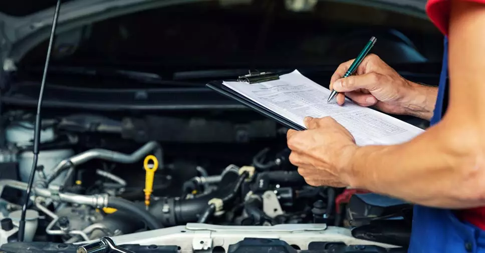
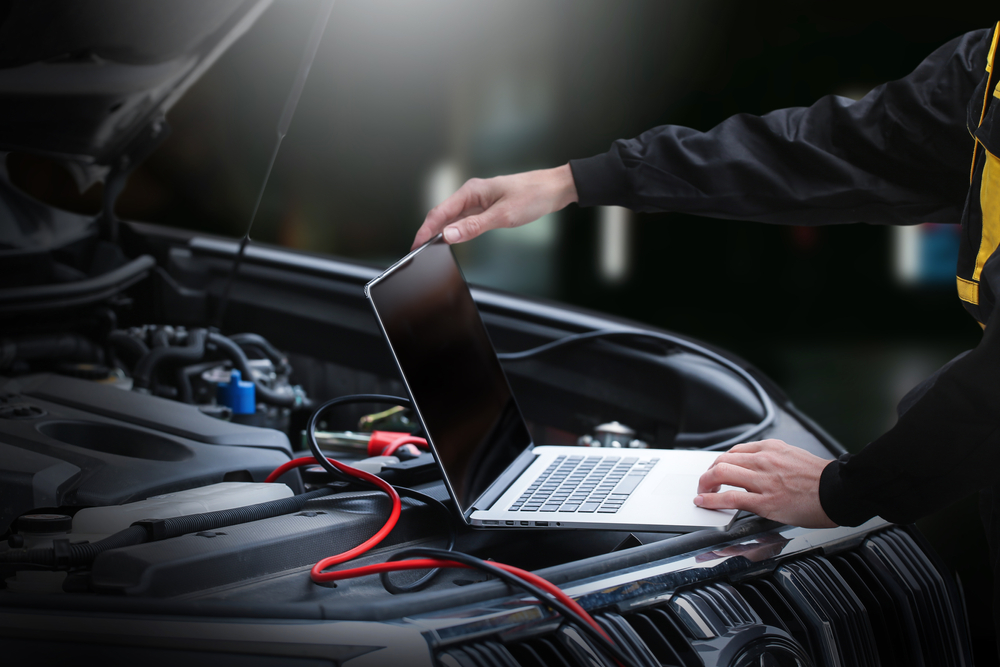

Serviços:
Manutenção de Rotina

- Troca de óleo e filtro
- Troca de filtros de ar e combustível
- Alinhamento e balanceamento
- Inspeções gerais
- Manutenção de Rotina:
- A manutenção de rotina previne falhas e prolonga a vida útil dos equipamentos, garantindo eficiência e segurança no ambiente de trabalho.
Reparos Mecânicos

- Reparos no motor
- Reparos de transmissão
- Sistema de freios
- Sistema de direção e suspensão
- Sistema de arrefecimento
- Escapamento
- Reparos Mecânicos:
- Os reparos mecânicos corrigem falhas em máquinas, evitando danos maiores e mantendo a eficiência operacional e a segurança.
Diagnósticos e Elétricos

- Diagnóstico com scanner
- Reparos elétricos
- Sistemas de injeção eletrônica
- Diagnósticos e Elétricos:
- Os diagnósticos elétricos identificam problemas antes que se tornem graves, assegurando a segurança e otimizando a eficiência energética.
Serviços de Troca

- Troca de correias e tensores
- Substituição de pneus
- Troca de fluidos
- Serviços de Troca:
- Os serviços de troca envolvem substituir peças ou equipamentos desgastados, assegurando o funcionamento adequado e a segurança dos sistemas.
Trabalhos Especializados

- Ajuste de motores
- Reparo de câmbio automático
- Reparos de sistemas de ar-condicionado
- Reparos de direção hidráulica e elétrica
- Trabalhos Especializados:
- Trabalhos especializados oferecem soluções técnicas adequadas e garantem conformidade com normas de segurança, evitando problemas futuros.